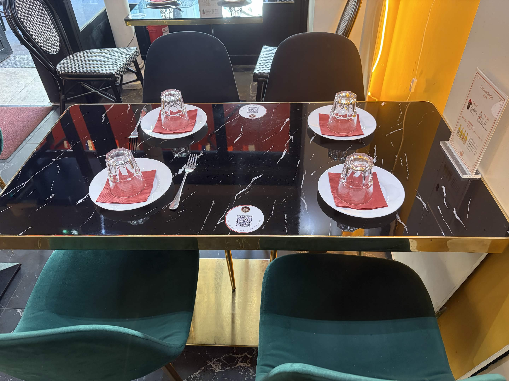
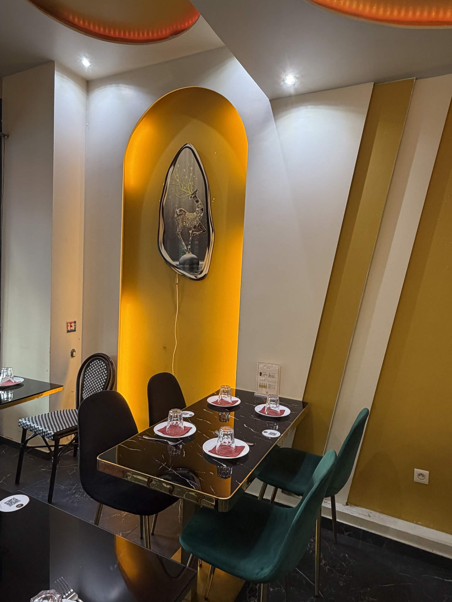

Cuisine d'Asie Centrale · Halal
Le 831 火焱山
93 Boulevard de Sébastopol, Paris 2e
Découvrir notre menu
93 Boulevard de Sébastopol, Paris 2e
Découvrir notre menu
Situé au cœur de Paris sur le Boulevard de Sébastopol, Le 831 vous invite à un voyage culinaire au cœur des traditions d'Asie Centrale.
Nos chefs perpétuent un savoir-faire ancestral : nouilles tirées à la main, brochettes d'agneau grillées au feu de bois, ragoûts mijotés longuement. Chaque plat raconte l'histoire d'une culture préservée avec passion.
Une technique ancestrale transmise de génération en génération. Chaque nouille est pétrie, étirée et pliée à la main, avec une précision qui transforme la farine et l'eau en un chef-d'œuvre de texture.

Farine, eau et savoir-faire — la pâte est pétrie jusqu'à la perfection élastique.

La pâte repose, couverte, pour développer son élasticité naturelle.

Étirée, pliée, étirée encore — la pâte devient une centaine de filaments soyeux.

Sautées au wok avec bœuf et légumes, chaque bouchée est un voyage.
Un cadre chaleureux où se mêlent le vert profond, les lumières ambrées et l'élégance du marbre noir. Découvrez l'ambiance unique du 831.







Deux salons karaoké privatifs au sous-sol, insonorisés et climatisés, pour vos soirées entre amis ou en famille.
93 Boulevard de Sébastopol, 75002 Paris
Métro Réaumur-Sébastopol (lignes 3 & 4)
Carte bancaire · Espèces · Tickets Restaurant